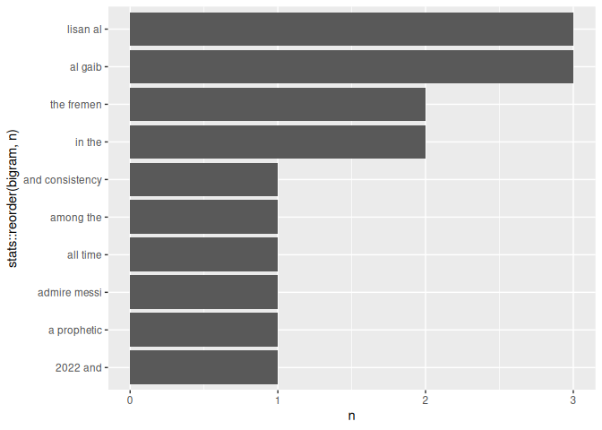

tobitext is a small R package for simple text analysis workflows. It helps users tokenize text, create bigrams, and visualize the most common bigrams using a tidytext style workflow.
Installation
You can install the development version of tobitext from GitHub with:
# install.packages("devtools")
devtools::install_github("ADC-405-S26/Tokenization-and-Bigrams-Explore-Package")Why tobitext?
Modern large language models (LLMs) and NLP systems are fundamentally built on token based text processing. Before models can understand or generate language, text first needs to be broken into smaller units such as words, tokens, or n-grams.
tobitext focuses on introducing these foundational NLP concepts through a simple and beginner friendly workflow in R. The package is designed for students and early learners who want to explore how tokenization and bigram analysis work before moving into more advanced machine learning or language modeling tasks.
The package focuses on three core ideas:
- tokenizing text into individual words
- creating bigrams and n-grams
- identifying repeated language patterns
These workflows are commonly used in:
- text mining
- sentiment analysis
- predictive text systems
Example dataset
The package includes a small dataset called sample_text containing short text passages about Lionel Messi and Lisan al Gaib from Dune.
sample_text
#> id
#> 1 1
#> 2 2
#> text
#> 1 Lionel Messi is widely considered one of the greatest football players of all time. Messi helped Argentina win the FIFA World Cup in 2022 and won multiple Ballon dOr awards during his career. Many football fans admire Messi for his dribbling, creativity, and consistency in important matches.
#> 2 Lisan al Gaib is a prophetic figure in the Dune universe created by Frank Herbert. The Fremen believe Lisan al Gaib will lead them to freedom and transform the future of Arrakis. In the story, Paul Atreides gradually becomes associated with the legend of Lisan al Gaib as he gains influence among the Fremen people.Tokenize words
Tokenization is one of the first steps in NLP workflows. The tokenize_words() function breaks text into individual word level observations.
This process helps transform raw text into structured data that can later be used for:
- word frequency analysis
- sentiment analysis
- LLM preprocessing
tokens <- tokenize_words(sample_text, "text")
head(tokens, 10)
#> id
#> 1 1
#> 2 1
#> 3 1
#> 4 1
#> 5 1
#> 6 1
#> 7 1
#> 8 1
#> 9 1
#> 10 1
#> text
#> 1 Lionel Messi is widely considered one of the greatest football players of all time. Messi helped Argentina win the FIFA World Cup in 2022 and won multiple Ballon dOr awards during his career. Many football fans admire Messi for his dribbling, creativity, and consistency in important matches.
#> 2 Lionel Messi is widely considered one of the greatest football players of all time. Messi helped Argentina win the FIFA World Cup in 2022 and won multiple Ballon dOr awards during his career. Many football fans admire Messi for his dribbling, creativity, and consistency in important matches.
#> 3 Lionel Messi is widely considered one of the greatest football players of all time. Messi helped Argentina win the FIFA World Cup in 2022 and won multiple Ballon dOr awards during his career. Many football fans admire Messi for his dribbling, creativity, and consistency in important matches.
#> 4 Lionel Messi is widely considered one of the greatest football players of all time. Messi helped Argentina win the FIFA World Cup in 2022 and won multiple Ballon dOr awards during his career. Many football fans admire Messi for his dribbling, creativity, and consistency in important matches.
#> 5 Lionel Messi is widely considered one of the greatest football players of all time. Messi helped Argentina win the FIFA World Cup in 2022 and won multiple Ballon dOr awards during his career. Many football fans admire Messi for his dribbling, creativity, and consistency in important matches.
#> 6 Lionel Messi is widely considered one of the greatest football players of all time. Messi helped Argentina win the FIFA World Cup in 2022 and won multiple Ballon dOr awards during his career. Many football fans admire Messi for his dribbling, creativity, and consistency in important matches.
#> 7 Lionel Messi is widely considered one of the greatest football players of all time. Messi helped Argentina win the FIFA World Cup in 2022 and won multiple Ballon dOr awards during his career. Many football fans admire Messi for his dribbling, creativity, and consistency in important matches.
#> 8 Lionel Messi is widely considered one of the greatest football players of all time. Messi helped Argentina win the FIFA World Cup in 2022 and won multiple Ballon dOr awards during his career. Many football fans admire Messi for his dribbling, creativity, and consistency in important matches.
#> 9 Lionel Messi is widely considered one of the greatest football players of all time. Messi helped Argentina win the FIFA World Cup in 2022 and won multiple Ballon dOr awards during his career. Many football fans admire Messi for his dribbling, creativity, and consistency in important matches.
#> 10 Lionel Messi is widely considered one of the greatest football players of all time. Messi helped Argentina win the FIFA World Cup in 2022 and won multiple Ballon dOr awards during his career. Many football fans admire Messi for his dribbling, creativity, and consistency in important matches.
#> word
#> 1 lionel
#> 2 messi
#> 3 is
#> 4 widely
#> 5 considered
#> 6 one
#> 7 of
#> 8 the
#> 9 greatest
#> 10 footballCreate bigrams
Bigrams are 2 word combinations that help capture relationships between words instead of viewing each word independently.
For example, the phrase "world cup" contains more meaning together than the individual words "world" and "cup" separately.
Bigram analysis is commonly used in:
- predictive text systems
- search query analysis
- language modeling
bigrams <- create_bigrams(sample_text, "text")
head(bigrams, 10)
#> id
#> 1 1
#> 2 1
#> 3 1
#> 4 1
#> 5 1
#> 6 1
#> 7 1
#> 8 1
#> 9 1
#> 10 1
#> text
#> 1 Lionel Messi is widely considered one of the greatest football players of all time. Messi helped Argentina win the FIFA World Cup in 2022 and won multiple Ballon dOr awards during his career. Many football fans admire Messi for his dribbling, creativity, and consistency in important matches.
#> 2 Lionel Messi is widely considered one of the greatest football players of all time. Messi helped Argentina win the FIFA World Cup in 2022 and won multiple Ballon dOr awards during his career. Many football fans admire Messi for his dribbling, creativity, and consistency in important matches.
#> 3 Lionel Messi is widely considered one of the greatest football players of all time. Messi helped Argentina win the FIFA World Cup in 2022 and won multiple Ballon dOr awards during his career. Many football fans admire Messi for his dribbling, creativity, and consistency in important matches.
#> 4 Lionel Messi is widely considered one of the greatest football players of all time. Messi helped Argentina win the FIFA World Cup in 2022 and won multiple Ballon dOr awards during his career. Many football fans admire Messi for his dribbling, creativity, and consistency in important matches.
#> 5 Lionel Messi is widely considered one of the greatest football players of all time. Messi helped Argentina win the FIFA World Cup in 2022 and won multiple Ballon dOr awards during his career. Many football fans admire Messi for his dribbling, creativity, and consistency in important matches.
#> 6 Lionel Messi is widely considered one of the greatest football players of all time. Messi helped Argentina win the FIFA World Cup in 2022 and won multiple Ballon dOr awards during his career. Many football fans admire Messi for his dribbling, creativity, and consistency in important matches.
#> 7 Lionel Messi is widely considered one of the greatest football players of all time. Messi helped Argentina win the FIFA World Cup in 2022 and won multiple Ballon dOr awards during his career. Many football fans admire Messi for his dribbling, creativity, and consistency in important matches.
#> 8 Lionel Messi is widely considered one of the greatest football players of all time. Messi helped Argentina win the FIFA World Cup in 2022 and won multiple Ballon dOr awards during his career. Many football fans admire Messi for his dribbling, creativity, and consistency in important matches.
#> 9 Lionel Messi is widely considered one of the greatest football players of all time. Messi helped Argentina win the FIFA World Cup in 2022 and won multiple Ballon dOr awards during his career. Many football fans admire Messi for his dribbling, creativity, and consistency in important matches.
#> 10 Lionel Messi is widely considered one of the greatest football players of all time. Messi helped Argentina win the FIFA World Cup in 2022 and won multiple Ballon dOr awards during his career. Many football fans admire Messi for his dribbling, creativity, and consistency in important matches.
#> bigram
#> 1 lionel messi
#> 2 messi is
#> 3 is widely
#> 4 widely considered
#> 5 considered one
#> 6 one of
#> 7 of the
#> 8 the greatest
#> 9 greatest football
#> 10 football playersPlot top bigrams
The plot_top_bigrams() function visualizes the most common bigrams in the dataset.
Finding repeated bigrams helps identify important themes, repeated phrases, and dominant language patterns within text data.
This type of analysis is often used in:
- news and article analysis
- social media mining
- customer review analysis
- topic exploration
- trend detection
plot_top_bigrams(bigrams, n = 10)